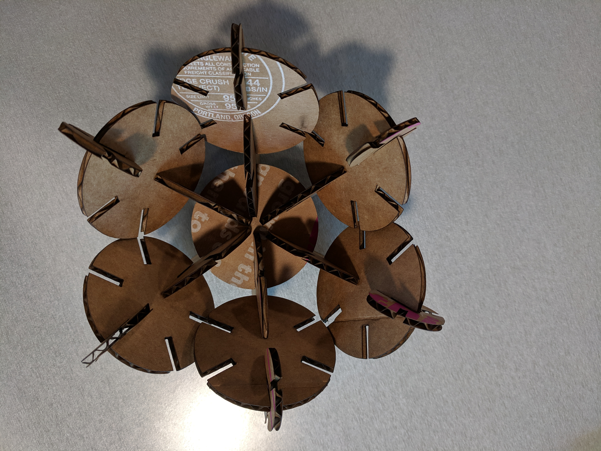

Assignment 3: 3D Printed & Laser Cut Lamp


For this assignment, I created a lamp box with a 3D printed base, & laser cut wood panels.
Source Files
Rhino file
Dremel file
AI working file
3D Printer settings: Nozzle temp: 235/280 degree C, Platform temp: 35/100 degree C, Print speed: 100%, Fan speed: 100%
Laser Printing settings: 100% power, 20% speed, 50% freq.
I started out by reviewing a lot of Grasshopper tutorials. Some resources I found to be helpful include: ThinkParametric & Beginners Guide to Visual Scripting
Nadya's video tutorial was very helpful since the Rhino & Grasshopper learning curve was VERY steep.
Rhino & Grasshopper steps
I created a circular base shape & used rectangle components to create the slots. I utilized the number slider for 4 parameters: 1) Radius of circle, x & y length of rectangle, & count of rectangles.

Circular components
I attempted creating a hexagon as one of the shapes, but in the ended went with 2 circular shapes, with different radius, & Y axis for the rectangle slots.

Laser printing
I used two cardboards with varying thickness (3.5 & 3.2 mm) for the laser printing. I changed the slot dimensions accordingly. I tried speed of 50 and realized that it was not enought to cut the cardboard. I then tried speed of 20 which worked better.
Fabricated Outputs
Images of the final fabricated output across both cardboard types. The image below is from the thicker cardboard (3.5mm)


The image below is from the thinner cardboard (3.2mm)


Peer Attributions
It took a village to get this assignment done.
Thank you to Tyson Zevenbergen & Christa Keizer - for showing me how the laser cutter works & helping resize the AI files to match the printer.